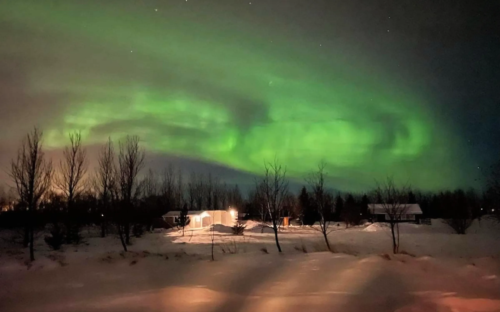
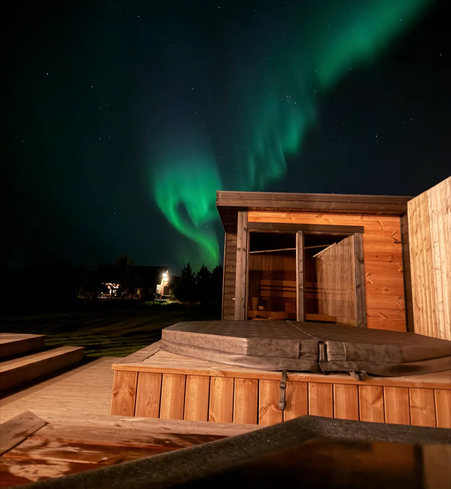
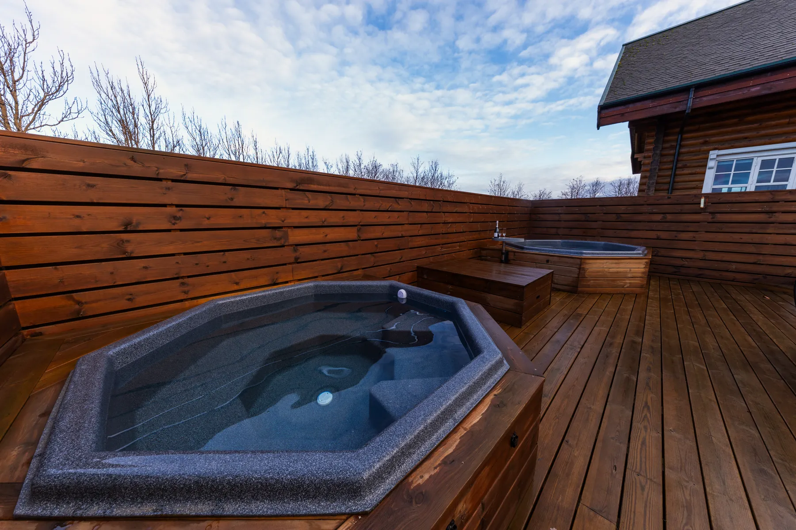
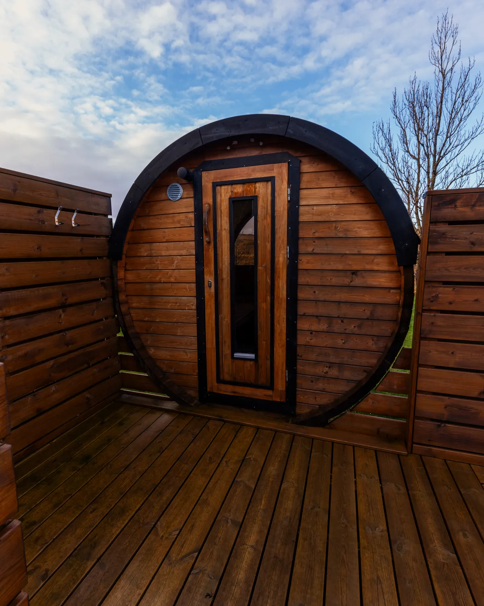

Secret Lagoon
Every day, 10:00 to 19:00, from 1 October to 31 May. 24 and 31 December, 10:00 to 18:00.
secretlagoon.is
The northern lights over the decks on dark, clear nights, a hot tub that is open all year, and the Golden Circle in the short winter daylight.
They need dark and partly clear skies, in the words of the Icelandic Met Office. At the houses the nights are dark enough from about 16 August to 27 April.
Check the cloud cover and the aurora activity, on a scale of 0 to 9, on the Met Office aurora forecast each evening. Clear patches matter more than a high number.
They are never guaranteed. The decks face the open fields, so on a good night you watch from the hot tub.

“We enjoyed the hot tub, the dome, and caught the Northern Lights three nights in a row.”
“Also a great place to view Northern Lights each night!”
“we were able to see crystal clear stars and northern lights while still having a grocery store right around the corner.”
“We even got to see the Northern Lights on a couple of occasions :)”
Sunrise and sunset at the houses on the 21st of each month. Iceland keeps the same time all year (UTC).
| Month | Day on a 24-hour line | Sunrise | Sunset | Daylight |
|---|---|---|---|---|
| September 21 | 06:00 | 19:29 | 12 h 29 min | |
| October 21 | 08:28 | 17:43 | 9 h 15 min | |
| November 21 | 10:08 | 16:07 | 5 h 58 min | |
| December 21 | 11:15 | 15:23 | 4 h 08 min | |
| January 21 | 10:34 | 16:30 | 5 h 55 min | |
| February 21 | 08:58 | 18:12 | 9 h 14 min | |
| March 21 | 07:20 | 19:38 | 12 h 17 min | |
| April 21 | 05:30 | 21:10 | 15 h 41 min |
Each house has its own hot tub, cold plunge and sauna on a private deck. Mountain Villa’s hot tub is available all year, open 24 hours, and its glass dome is a warm place to watch the sky.


“Sky bubble was so cool, hot tub was awesome; admittedly we did not do the cold plunge but it was snowing :)”
“Watching the stars from the hot tub on Christmas was a truly special treat.”
“The sauna and hot tub were great for evening relaxation.”
Hours as each place lists them on its own website, read on 4 November 2026. Check before you go.
Every day, 10:00 to 19:00, from 1 October to 31 May. 24 and 31 December, 10:00 to 18:00.
secretlagoon.isEvery day, 10:00 to 20:30 (last entry 19:00), from 3 November to 30 April. 24 December 10:00 to 14:00, 31 December 10:00 to 16:00.
laugaraslagoon.isThe greenhouse kitchen serves lunch every day, 11:30 to 16:00. Tables can be booked online.
fridheimar.isWith about 4 h 08 min of daylight in late December, start at the nearest: Geysir is 27 minutes away and Gullfoss 32. Every place, on the map
Book here and pay 5% less than on Airbnb. Nights already taken on Airbnb or VRBO are closed in the calendar. Sending a request is free: the hosts confirm your dates, then send a secure link to pay.